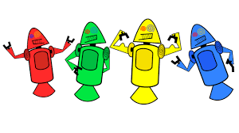

HISTÓRIA DO MASCOTE DO ANDROID
Provavelmente você sabe que o sistema operacinal Android, mantido pelo Google é um dos mais ultilizados para dispositivos móveis em todo o mundo. Mas talvez você não saiba que o seu simpático mascote tem um nome e uma história muito curiosa? Pois acompanhe esse Artigo para aprender muita coisa sobre esse robozinho.
a primeira versão
A primeira tentativa de criar um mascote surgiu em 2007 e veio de um desenvolvedor chamado Dan Morril . Ele Conta que abriu o Inkscape (software livre para vetorização de imagens) e criou sua própria versão de robô. O objetivo era apenas personificar o sistema apenas para a sua equipe, não existiu nenhuma solicitaçao da empresa para criaçao de um mascote.
Essa primeira versão bizarra até foi batizada em homenagem ao se criador: seriam os Dandroids.
Surge um novo mascote
A ideia de ter um mascote foi amadurecendo e a missão foi passada para uma profissional da área. A ilustradora Russa Irina Block. Tambem funcionária do Google, ficou com a missão de representar o pequeno robô de uma maneira mais agradável.
A ideia principal que irrita era representar tudo graficamente com poucos traços e de for,a mais chapada. O desenho também deveria gerar identificação rápida com quem o olha. Surgiu então o Bugdroid. O novo mascote do Android.

A principal inspiração para os traços de novo Bugdroid veio daqueles bonequinhos que Ilustram portas de banheiros para indicar o gênero de cada porta. Conta a lenda que a artista estava criando em sua mesa no escritório do Google e olhou para o lado dos banheiros e a identificação foi imediata: simples, limpo, objetivo